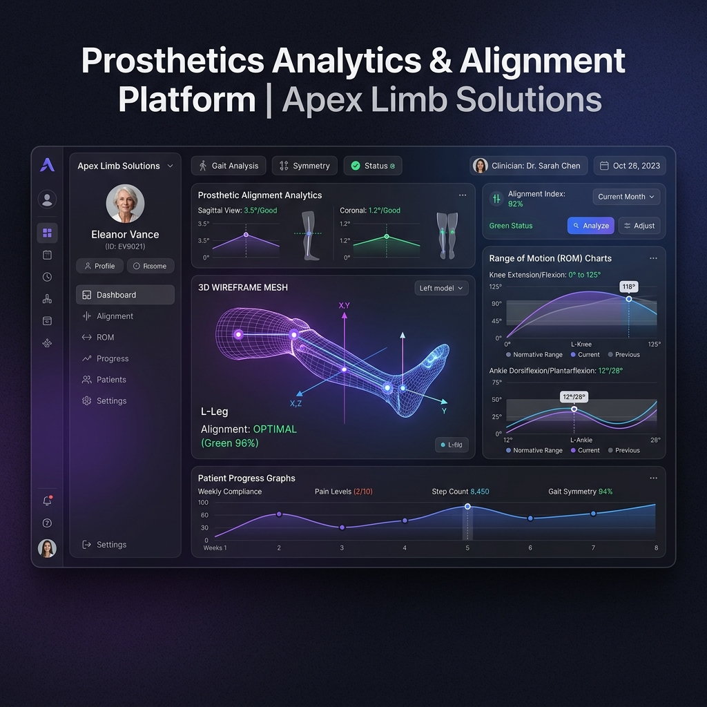

Next-Gen Orthotic Bracing & CAD/CAM Fabrication
We leverage sub-millimeter 3D scanning, proprietary CAD modeling, and precision thermoplastic molding to create hyper-aligned spinal and extremity braces.
Digital Fabrication Infrastructure
Fusing computer aided engineering with high-grade carbon and polymers to create active-living orthoses.
CAD/CAM Alignment
We manipulate structure files digitally to optimize offloading areas, ensuring standard physical pressure is distributed safely.
Sub-Millimeter 3D Scanning
Eliminating messy plaster molds. Optical scanning captures patient limb geometries in seconds with micron-level precision.
Additive Fabrication
Utilizing multiaxial printing and custom composite laminations to achieve variable rigidity profiles tailored to rehabilitation goals.
Dynamic Clinical Analytics Preview
Physicians can securely monitor device fabrication progress, check biomechanical alignment simulations, and download pre/post range-of-motion reports in one secure platform.
Interactive Progress Mapping
Trace your patient's orthosis from printing to clinical delivery.
Range-Of-Motion Biomechanics
View real-time sagittal plane gait analysis comparisons.

Specialized Orthotic Care Programs
Precision support bracing customized to facilitate neural retraining, post-surgical recovery, and orthopedic corrections.
Spinal Orthoses
Custom scoliosis braces (Boston & Providence styles) and trauma stabilization systems built with digital scanning precision.
Lower Extremity Braces
Ankle-Foot Orthoses (AFOs), Knee-Ankle-Foot Orthoses (KAFOs), and ground-reaction systems tailored for stability and foot drop.
Upper Extremity Support
Functional hand, wrist, and elbow splints designed to support neuromuscular retraining and restrict dynamic post-op movement.
Pediatric Correction
Cranial remolding helmets and growth-adaptable clubfoot braces engineered with hyper-soft hypoallergenic interior linings.
Plantargrade Foot Pressure Heatmap
Biomechanical Gait Analysis
Stride Symmetry
98.4%
Ankle Swing
+14.2°
Load Balance
50/50
Data-Backed Patient Outcome Reports
Every custom device undergoes dynamic pressure mapping. We measure patient stance symmetry, stride duration, and force distributions to prove alignment correction.
These visual analytics dashboards help physicians track physical rehabilitation progress, providing concrete mobility benchmarks to insurance providers for prompt claims coverage.
Partner with BioAlign Lab to Restore Patient Mobility
Whether you are an orthopedic physician referring a patient or an individual seeking a custom fit consultation, our clinical engineering team is ready to assist.